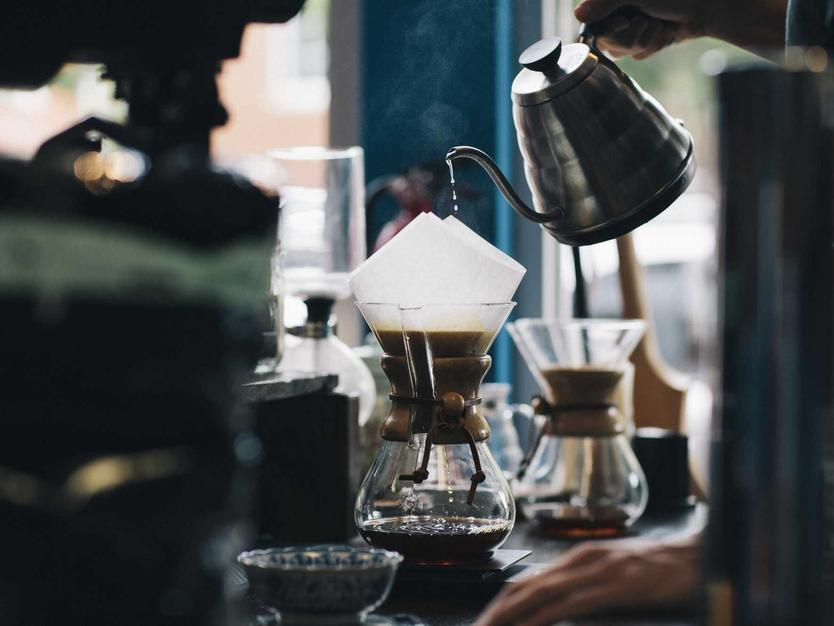
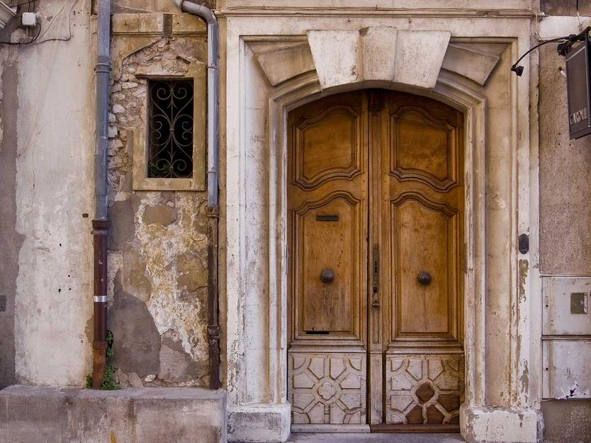
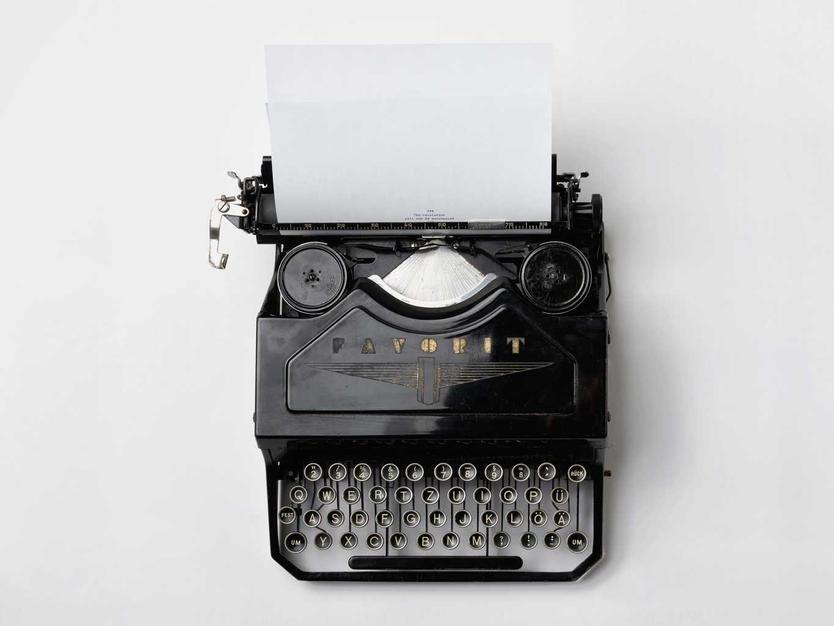
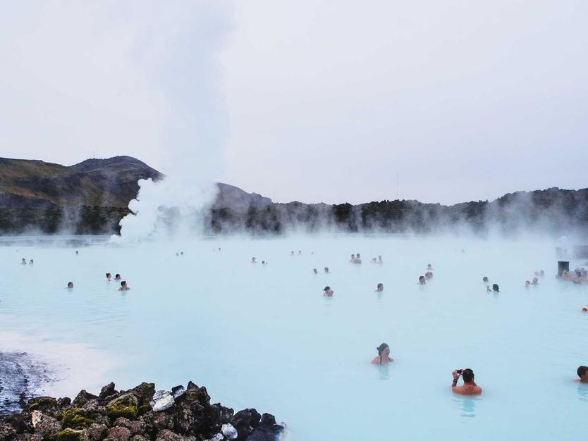

Za branje, ko potrebujete nekaj prostora za razmislek.
Zapisi o coachingu, samozavedanju, spremembah, odločitvah in odnosu do sebe.
Ne kot navodila za življenje. Kot vprašanja in perspektive, ki lahko odprejo nekaj novega.
Zapisi o coachingu, samozavedanju, spremembah, odločitvah in odnosu do sebe.
Ne kot navodila za življenje. Kot vprašanja in perspektive, ki lahko odprejo nekaj novega.



